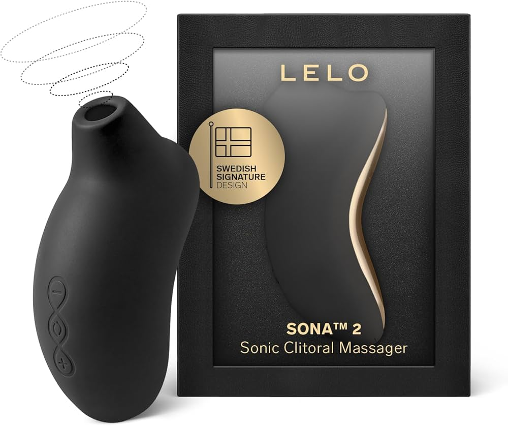
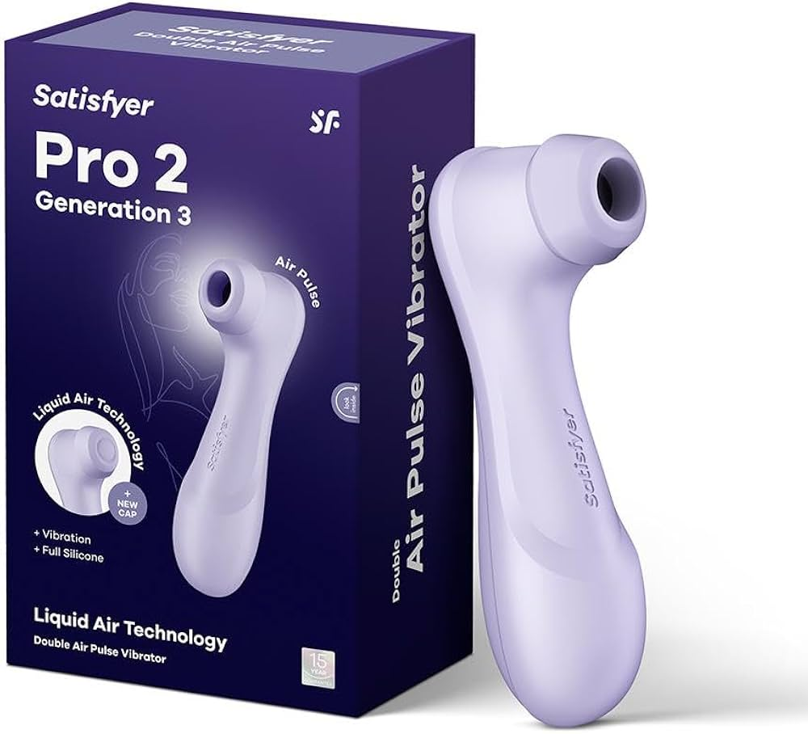

Vergeet 'glass skin', haarmaskers met rozemarijnwater en de 75 Hard challenge. De welzijnstrend die momenteel mijn groepschat opblaast—en, als ik eerlijk ben, mijn hele leven—is iets dat een beetje meer… citrusachtig is.
Maandenlang zag ik het gefluister op TikTok. Cryptische video's van een citroen op een bed, met een trending audiofragment, en reacties overspoeld met inside jokes en het alomtegenwoordige "iykyk" (if you know, you know). De trend werd de "Bed Lemon Press" genoemd, en het was, op zijn zachtst gezegd, verwarrend. Als professionele scepticus en journalist die elke welzijnstrend van paddenstoelenkoffie tot oorzaadjes persoonlijk heeft geprobeerd, rolde ik zo hard met mijn ogen dat ik bijna een oogzenuw verrekte. "Geweldig," mompelde ik tegen mijn onverschillige kat, "weer een overhypete gadget bestemd voor het kerkhof van dingen die ik één keer heb geprobeerd."
Maar toen veranderde er iets. Mijn vriendin Sarah, een pragmatische advocate die al tien jaar gelukkig getrouwd is en nog steeds een fysieke agenda gebruikt, stuurde me om 02:17 uur een paniekerig bericht in hoofdletters. Er stond simpelweg: "JE MOET DIT PROBEREN. HET IS LEVENSVERANDEREND. GEEN GRAP."
Voor Sarah, een vrouw die een geurkaars als een extravagante verwennerij beschouwt, was dit het equivalent van een pauselijk decreet. Ik wist toen dat ik op onderzoek uit moest. Wat er volgde was een drie maanden durende duik in de wereld van "plezier-tech," een reis waarbij ik meer dan twee dozijn aan apparaten testte, een aanzienlijke aanslag op mijn bankrekening pleegde en verschillende ongemakkelijke ontmoetingen met mijn postbode had. En ik kan nu rapporteren, met de volledige autoriteit van mijn journalistieke integriteit en een nieuwe gloed die niets te maken heeft met mijn nieuwe serum: de hype is echt. De nieuwe obsessie van het internet gaat niet over huidverzorging, fitness of mindfulness. Het gaat over plezier. En het beste apparaat om dat te leveren is niet wat je denkt.
De Wetenschap van Luchtdruk: Waarom Het Anders Is
Voordat we in de details van onze topkeuzes duiken (spoiler alert: een zekere op citrus geïnspireerde sensatie heeft me volledig geobsedeerd), laten we eens kijken wat hier eigenlijk gebeurt. De "Bed Lemon Press" is een slim, knipogend eufemisme voor een nieuwe generatie welzijnsapparaten voor volwassenen: clitorale zuigspeeltjes.
Anatomie 101: De Verborgen Structuur
Om te begrijpen waarom deze werken, moet je de anatomie begrijpen. De clitoris is niet alleen het kleine "knopje" dat je aan de buitenkant ziet; het is een complexe structuur met "wortels" (crura) die diep in het lichaam doorlopen. Het heeft meer dan 8.000 zenuwuiteinden—dubbel zoveel als de penis. Traditionele vibrators stimuleren voornamelijk het oppervlak. Luchtdruktechnologie creëert echter drukgolven die dieper doordringen en de hele interne structuur stimuleren zonder direct contact. Dit is waarom gebruikers de sensatie vaak beschrijven als "voller" of "dieper" dan standaard vibratie.
Dit gaat niet over ruwe, schokkende vibraties. Dit gaat over genuanceerd, gericht plezier dat is ontworpen met een bijna wetenschappelijke precisie. In elk van deze apparaten voert een slim diafragma een delicate dans uit, waarbij de luchtdruk wordt gemoduleerd om sensaties te leveren die de ritmische druk van orale stimulatie nabootsen.
"De opkomst van luchtdruktechnologie is de belangrijkste innovatie in seksueel welzijn sinds de uitvinding van de vibrator. Het biedt een ander soort stimulatie—een die minder direct is, meer omvattend, en voor velen veel intenser."
De Methodologie: Waarom Ik Met 32 Apparaten Naar Bed Ging (Voor De Wetenschap)
Dus, laten we met dat in gedachten, naar het goede deel gaan. Na drie maanden rigoureus testen, zijn hier de apparaten die daadwerkelijk je geld, je tijd en je volgende "ziektedag" waard zijn.
Ik deed wat elk analytisch persoon zou doen: ik bracht heel wat dagen door met het methodisch testen van de 32 populairste opties op de markt. Budgetkeuzes, luxemerken, virale sensaties en dubieuze Instagram-advertenties. Ik gaf elk apparaat meerdere kansen, maakte gedetailleerde aantekeningen en vergeleek ervaringen zij-aan-zij.
De resultaten waren... polariserend. Negenentwintig apparaten haalden de selectie niet. Ze waren ofwel te zwak, klonken als een grasmaaier, gingen binnen enkele weken stuk, of konden simpelweg niet concurreren met de topklasse.
Hier is wat ik leerde van de 3 die het wel haalden: de meeste zijn solide presteerders. Een paar maakten echt indruk op me. En precies één deed me begrijpen waarom mensen obsessief worden over deze dingen.
De Officiële Ranglijst 2026: De Beste Zuigspeeltjes, Getest en Beoordeeld
De Nancy's Lem
Techniek Ontmoet Esthetiek
 Editor's Choice
Editor's ChoiceIk zal eerlijk zijn: ik was bereid om de Lem af te doen als gewoon weer een 'TikTok-speeltje'. Maar na het wegnemen van de virale marketing, spreekt de techniek eigenlijk voor zich. Wat de Lem onderscheidt van concurrenten is niet alleen het schattige ontwerp—het is de geometrie van de tuit. De opening is iets breder en zachter dan de industriestandaard, wat zorgt voor een effectievere afsluiting zonder het 'knijpende' gevoel dat vaak voorkomt bij goedkopere modellen. Het slaagt erin krachtig te zijn zonder agressief te zijn, een balans die berucht moeilijk te bereiken is in plezier-tech.
Why We Love It
- Geoptimaliseerde tuitvorm voorkomt 'zuigvermoeidheid'
- 12 patronen ontworpen om gewenning van de zenuwen te voorkomen
- Medische kwaliteit siliconen met een matte, zachte afwerking
- Motorisolatie maakt het aanzienlijk stiller dan de Pro 2
- IPX7 Waterdicht classificatie (volledig ondergedompeld getest)
The Catch
- Premium prijs weerspiegelt de bouwkwaliteit
- Vaak uitverkocht door grote vraag
Het oordeel: "Het maakt de hype waar, niet omdat het schattig is, maar omdat het echt goed ontworpen is. Een verfijnde keuze voor wie nuance waardeert."
Controleer Beschikbaarheid voor Nancy's LemDisclaimer: We zijn door lezers geïnformeerd dat de vraag tijdens de feestdagen ervoor kan zorgen dat dit item uitverkocht raakt. Als je het overweegt, kun je de beschikbaarheid controleren op www.hellonancy.com
LELO Sona 2 Cruise
De Luxe Sedan van Zuigspeeltjes

Why We Love It
- Cruise Control-technologie past de intensiteit automatisch aan
- Ongeëvenaarde kracht voor ervaren gebruikers
- Elegant, museumwaardig ontwerp
- Diepe, resonerende sonische golven
The Catch
- Aanzienlijke financiële investering
- Intensiteit kan overweldigend zijn voor beginners
Het oordeel: "De Dom Pérignon van de zuigspeeltjes. Perfect voor de fijnproever van het hoogtepunt."
Ervaar Luxe met LELO*Beperkte voorraad beschikbaar. Gratis verzending bij bestellingen boven $50.
Satisfyer Pro 2
De Kampioen van het Volk

Why We Love It
- Ongelooflijke prijs-kwaliteitverhouding
- Betrouwbare en consistente prestaties
- Geweldig instapmodel voor beginners
- 11 intensiteitsniveaus
The Catch
- Merkbaar luider dan premium opties
- Functioneel maar basisontwerp
Het oordeel: "De Toyota Camry van de zuigspeeltjes. Betrouwbaar, betaalbaar en brengt je waar je moet zijn."
Koop de Satisfyer Pro 2*Beperkte voorraad beschikbaar. Gratis verzending bij bestellingen boven $50.
De Ultieme Vergelijking: Welke Is Geschikt Voor Jou?
| Categorie | Winnaar | Waarom |
|---|---|---|
| Beste Algemeen | Nancy's Lem | De perfecte balans tussen prijs, prestaties, ontwerp en discretie. |
| Beste voor Beginners | Satisfyer Pro 2 | Een betaalbaar, betrouwbaar en effectief instapmodel. |
| Beste voor Experts | LELO Sona 2 | Ongeëvenaarde kracht en een luxe, hightech ervaring. |
| Beste Waarde | Satisfyer Pro 2 | Je kunt de prestaties simpelweg niet verslaan voor de prijs. |
Ook Getest (Degene Die Het Niet Haalden)
Ik maakte geen grapje toen ik zei dat ik alles heb getest. Hier is het volledige kerkhof van apparaten die de top 3 niet haalden, en precies de reden waarom ze tekortschoten.
Veelgestelde Vragen
V: Zijn zuigspeeltjes beter dan vibrators?
A: Ze zijn niet beter, ze zijn anders. Vibrators zorgen voor directe, rommelende stimulatie, terwijl zuigspeeltjes luchtpulsen gebruiken om een meer omvattende, zuigende sensatie te creëren. Veel mensen vinden beide fijn om verschillende redenen. Het is alsof je vraagt of pizza beter is dan taco's. Ze zijn allebei geweldig, het hangt er gewoon van af waar je zin in hebt.
V: Zijn ze veilig?
A: Ja. Alle speeltjes op deze lijst zijn gemaakt van lichaamsveilige, medische kwaliteit siliconen. Zolang je van een gerenommeerd merk koopt en je speeltjes goed schoonmaakt, zijn ze volkomen veilig in gebruik.
V: Kan ik ze met een partner gebruiken?
A: Absoluut! Hoewel veel mensen zuigspeeltjes fijn vinden voor solo spel, kunnen ze ook een geweldige toevoeging zijn bij seks met je partner. Je kunt ze gebruiken tijdens het voorspel, of ze integreren in de geslachtsgemeenschap.
Het Laatste Woord: Een Uitnodiging voor de Plezierrevolutie
Veel te lang is het plezier van vrouwen weggestopt als een bijzaak; een taboe waarover hooguit in het geheim werd gefluisterd. Maar in 2026 verandert het gesprek. De opkomst van plezier-tech gaat niet alleen over nieuwe gadgets; het gaat over een culturele verschuiving. Het gaat erom dat vrouwen hun recht op plezier opeisen, zonder verontschuldiging en op hun eigen voorwaarden.
Of je nu een doorgewinterde pro bent of een nieuwsgierige beginner, er is nog nooit een beter moment geweest om de wereld van seksueel welzijn te verkennen. Deze apparaten zijn niet zomaar "seksspeeltjes". Het zijn hulpmiddelen voor zelfontdekking, voor empowerment en voor vreugde. Ze zijn een manier om contact te maken met je lichaam, te begrijpen wat je fijn vindt en je eigen plezier prioriteit te geven.
Dus, als je twijfelde, beschouw dit dan als je officiële uitnodiging voor de plezierrevolutie. Het gebeurt overal om je heen. De enige vraag is: ben je klaar om mee te doen?
Over Zola Park-Lewis
Zola is een cultuurschrijfster en herstellende minimalist. Haar werk verkent het snijvlak van welzijn, tech en moderne intimiteit. Ze woont in Brooklyn met te veel planten en een zeer oordelende kat genaamd Miso.
Klaar om de Hype te Ervaren?
Sluit je aan bij duizenden vrouwen die hun welzijnsroutine al hebben geüpgraded.
Ja, ik ben er klaar voor! Breng Me naar de Nancy's Lem